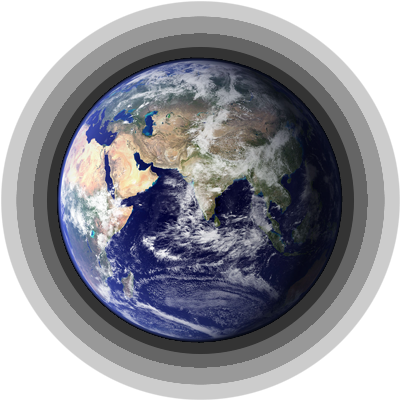

The hacker tourist ventures forth across the wide and wondrous meatspace of three continents, chronicling the laying of the longest wire on Earth.
In which the hacker tourist ventures forth across the wide and wondrous meatspace of three continents, acquainting himself with the customs and dialects of the exotic Manhole Villagers of Thailand, the U-Turn Tunnelers of the Nile Delta, the Cable Nomads of Lan tao Island, the Slack Control Wizards of Chelmsford, the Subterranean Ex-Telegraphers of Cornwall, and other previously unknown and unchronicled folk; also, biographical sketches of the two long-dead Supreme Ninja Hacker Mage Lords of global telecommunications, and other material pertaining to the business and technology of Undersea Fiber-Optic Cables, as well as an account of the laying of the longest wire on Earth, which should not be without interest to the readers of Wired.
Information moves, or we move to it. Moving to it has rarely been popular and is growing unfashionable; nowadays we demand that the information come to us. This can be accomplished in three basic ways: moving physical media around, broadcasting radiation through space, and sending signals through wires. This article is about what will, for a short October 19th anyway, be the biggest and best wire ever made.
Wires warp cyberspace in the same way wormholes warp physical space: the two points at opposite ends of a wire are, for informational purposes, the same point, even if they are on opposite sides of the planet. The cyberspace-warping power of wires, therefore, changes the geometry of the world of commerce and politics and ideas that we live in. The financial districts of New York, London, and Tokyo, linked by thousands of wires, are much closer to each other than, say, the Bronx is to Manhattan.
Today this is all quite familiar, but in the 19th century, when the first feeble bits struggled down the first undersea cable joining the Old World to the New, it must have made people’s hair stand up on end in more than just the purely electrical sense – it must have seemed supernatural. Perhaps this sort of feeling explains why when Samuel Morse stretched a wire between Washington and Baltimore in 1844, the first message he sent with his code was “What hath God wrought!” – almost as if he needed to reassure himself and others that God, and not the Devil, was behind it.
During the decades after Morse’s “What hath God wrought!” a plethora of different codes, signalling techniques, and sending and receiving machines were patented. A web of wires was spun across every modern city on the globe, and longer wires were strung between cities. Some of the early technologies were, in retrospect, flaky: one early inventor wanted to use 26-wire cables, one wire for each letter of the alphabet. But it quickly became evident that it was best to keep the number of individual wires as low as possible and find clever ways to fit more information onto them.
This requires more ingenuity than you might think – wires have never been perfectly transparent carriers of data; they have always degraded the information put into them. In general, this gets worse as the wire gets longer, and so as the early telegraph networks spanned greater distances, the people building them had to edge away from the seat-of-the-pants engineering practices that, applied in another field, gave us so many boiler explosions, and toward the more scientific approach that is the standard of practice today.